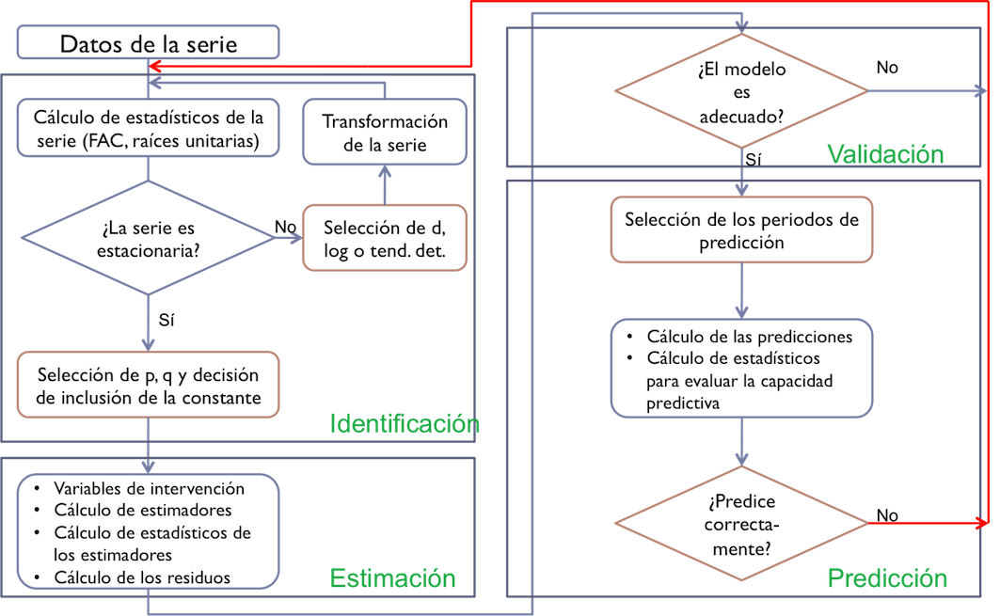

Series Temporales: Procesos ARIMA
Máster de Bioestadística (Modelización Estadística)
Iván Arribas (Depto. Análisis Económico. Universitat de València)
1 Introducción
Los modelos ARIMA han mostrado ser uno se los métodos de ajuste de series temporales más valiosos desde que fueran formalizados en 1976 por Box y Jenkins, en su libro Time series analysis, forecasting and control. Además, dieron las pautas a seguir en el ajuste de una serie temporal para alcanzar buenas predicciones (véase epígrafe 5).
En este tema y el siguiente, definiremos estos procesos y aprenderemos a identificarlos, estimarlos y hacer predicciones.
Los procesos ARIMA son ahora el tronco de una amplia familia de procesos que requieren menos hipótesis para su aplicación: ARCH, GARCH, NGARCH, IGARCH, EGARCH, GARCH-M, QGARCH, GJR-GARCH, TGARCH, fGARCH…
Los procesos ARIMA y los métodos de Alisado Exponencial son complementarios:
- Los modelos de Alisado lineales son casos especiales de modelos Arima,
- Los modelos de Alisado no lineales no tienen su contrapartida en modelos Arima
- Muchos modelos Arima no tiene contrapartida en los modelos de Alisado.
2 Operador Retardo
Definimos el operador retardo \(L\) como \(Ly_t = y_{t-1}\), es decir, retrasa un periodo la serie. En inglés se denomina lag operator (L) o backward shift (B)
Así, se tiene que \[L^k y_t = y_{t-k}.\] y por tanto que \[ \begin{aligned} \nabla y_t & = y_t - y_{t-1} = y_t - Ly_t = (1-L)y_t \\ \nabla^d y_t & = (1-L)^d y_t \\ \nabla_m y_t & = (1-L^m) y_t \\ \nabla_m^D y_t & = (1-L^m)^D y_t \end{aligned} \]
La siguiente tabla muestra un sencillo ejemplo del efecto del operador retardo sobre la serie \(y_t\)| y | lag1_y | lag2_y | lag3_y |
|---|---|---|---|
| 1 | NA | NA | NA |
| 2 | 1 | NA | NA |
| 3 | 2 | 1 | NA |
| 4 | 3 | 2 | 1 |
| 5 | 4 | 3 | 2 |
| 6 | 5 | 4 | 3 |
| 7 | 6 | 5 | 4 |
3 Hipótesis
3.1 Sobre el proceso estocástico
A lo largo de este tema asumiremos que:
\(\{y_t\}_{t=1}^T\) es una realización de un proceso estocástico desconocido.
El proceso estocástico es estacionario en sentido amplio: \[E[y_t] = \mu < \infty \;\;\; \forall t,\] \[Cov[y_t, y_{t-k}] = \gamma_k \;\;\; \forall k.\]
El proceso estocástico es ergódico, o su condición suficiente: \[\lim_{k \rightarrow \infty} \gamma_k = 0.\]
3.2 Sobre el vector de residuos
También asumiremos que el residuo del modelo \(\{\varepsilon_t\}_{t=1}^T\) es ruido blanco:
- Media cero: \(E[\varepsilon_t]=0\)
- Varianza constante (homocedástico): \(E[\varepsilon_t^2]=\sigma^2\)
- Incorrelación: \(E[\varepsilon_t \cdot \varepsilon_{s}]=0 \;\;\; t \neq s\)
- Distribución Normal: \(\varepsilon_t \sim N\)
Es decir, \(\varepsilon_t \sim N(0,\sigma^2)\) i.i.d.
4 Procesos ARIMA
ARIMA surge de combinar las siglas de tres procesos diferentes: AR de AutoRegresive, I de Integrated y MA de Moving Average. Veamos cada uno de estos tres conceptos por separado y luego su combinación.
4.1 Procesos autorregresivos AR(p)
Definición
El modelo general autorregresivo de orden p, \(y_t \sim AR(p)\) viene definido por \[y_t=c + \phi_1 y_{t-1} + \phi_2 y_{t-2} + \ldots + \phi_p y_{t-p} + \varepsilon_t,\] que usando el operador retardo queda \[(1 - \phi_1 L - \phi_2 L^2 - \ldots - \phi_p L^p)y_t = c + \varepsilon_t\]
Propiedades
El proceso es estacionario si quedan fuera del círculo de radio la unidad todas las raíces del polinomio autorregresivo \[\Phi_p(z) = 1 - \phi_1 z - \phi_2 z^2 - \ldots - \phi_p z^p.\]
Es invertible siempre.
Podemos transformar el proceso AR(p) en un proceso donde \(y_t\) depende de la suma infinita de errores pasados, MA(\(\infty\)).
Si conocemos las p primeras autocorrelaciones, podemos estimar los p parámetros del modelo. Por ejemplo, para un proceso AR(2) se verifica que: \[\rho_1 = \phi_1 + \phi_2 \rho_1\] \[\rho_2 = \phi_1 \rho_1 + \phi_2\]
Estas ecuaciones se denominan Ecuaciones de Yule-Walker.
Observa que si tenemos una estimación de las dos primeras autocorrelaciones, estas ecuaciones nos permiten obtener una estimación de los coeficientes del proceso AR(2) como una aplicación del método de los momentos.
Sobre todo,
- La FAC del proceso decae exponencialmente a partir del orden p
- La FACP verifica que los p primeros valores son no nulos y todos los demás valen cero.
Ejemplos
- \(y_t \sim AR(1): \;\;y_t = c + \phi_1 y_{t-1} + \varepsilon_t\) o \((1 - \phi_1 L)y_t = c + \varepsilon_t\)
- \(y_t \sim AR(2): \;\;y_t = c + \phi_1 y_{t-1} + \phi_2 y_{t-2} + \varepsilon_t\) o \((1 - \phi_1 L - \phi_2 L^2)y_t = c + \varepsilon_t\)
Simulación de procesos autorregresivos
Las figuras 1 y 2 muestran dos simulaciones del proceso AR(1) \(y_t = 0.8y_{t-1} + \varepsilon_t\), la primera con 20 datos y la segunda con 100 datos. En ambos casos \(\varepsilon_t\) se distribuye como una normal con media cero y varianza la unidad. (Todas las simulaciones se han realizado con la función arima.sim de la librería stats.)


Las figuras 3 y 4 muestran dos simulaciones de procesos AR(2), ambas con 100 datos. En la primera se tiene que \(y_t = 0.5y_{t-1} + 0.4 y_{t-2}+ \varepsilon_t\) y en la segunda \(y_t = 0.9y_{t-1} - 0.5 y_{t-2}+ \varepsilon_t\).


4.2 Procesos en medias móviles MA(q)
Definición
El modelo general en medias móviles de orden q, \(y_t \sim MA(q)\) viene definido por \[y_t=c + \varepsilon_t + \theta_1 \varepsilon_{t-1} + \theta_2 \varepsilon_{t-2} + \ldots + \theta_q \varepsilon_{t-q},\] que usando el operador retardo queda \[y_t = c + (1 + \theta_1 L + \theta_2 L^2 + \ldots + \theta_q L^q) \varepsilon_t\]
Propiedades
El proceso es invertible si quedan fuera del círculo de radio la unidad todas las raíces del polinomio en medias móviles \[\Theta_q(z) = 1 + \theta_1 z + \theta_2 z^2 + \ldots + \theta_q z^q.\]
- Podemos transformar el proceso MA(q) en un proceso AR(\(\infty\)).
- Si conocemos las q primeras autocorrelaciones, podemos estimar los q parámetros del modelo. Por ejemplo, para un proceso MA(2) se verifica que: \[\rho_1 = \frac{\theta_1 + \theta_1\theta_2}{1 + \theta_1^2 + \theta_2^2}\] \[\rho_2 = \frac{\theta_2}{1 + \theta_1^2 + \theta_2^2}\]
Es estacionario siempre.
Sobre todo,
- La FAC verifica que los q primeros valores son no nulos y todos los demás valen cero.
- La FACP decae exponencialmente a partir del orden q.
Ejemplos
- \(y_t \sim MA(1): \;\;y_t = c + \varepsilon_t + \theta_1 \varepsilon_{t-1}\) o \(y_t = c + (1 + \theta_1 L)\varepsilon_t\)
- \(y_t \sim MA(2): \;\;y_t=c + \varepsilon_t + \theta_1 \varepsilon_{t-1} + \theta_2 \varepsilon_{t-2}\) o \(y_t = c + (1 + \theta_1 L + \theta_2 L^2)\varepsilon_t\)
Simulación de procesos en medias móviles
Las figuras 5 y 6 ofrecen dos simulaciones del proceso MA(1) \(y_t = 0.8\varepsilon_{t-1} + \varepsilon_t\), la primera con 20 datos y la segunda con 100 datos. En ambos casos \(\varepsilon_t\) se distribuye como una normal con media cero y varianza la unidad.


Veamos ahora dos simulaciones de procesos MA(2), ambas con 100 datos (figuras 7 y 8). En la primera se tiene que \(y_t = 0.5\varepsilon_{t-1} + 0.4 \varepsilon_{t-2}+ \varepsilon_t\) y en la segunda \(y_t = 0.9\varepsilon_{t-1} - 0.5 \varepsilon_{t-2}+ \varepsilon_t\).


4.3 Procesos ARMA(p,q)
Definición
El modelo general \(y_t \sim ARMA(p,q)\) viene dado por \[y_t = c + \phi_1 y_{t-1} + \phi_2 y_{t-2} + \ldots + \phi_p y_{t-p} + \theta_1 \varepsilon_{t-1} + \theta_2 \varepsilon_{t-2} + \ldots + \theta_q \varepsilon_{t-q}+ \varepsilon_t,\] que usando el operador retardo queda \[(1 - \phi_1 L - \ldots - \phi_p L^p)y_t = c + (1 + \theta_1 L + \ldots + \theta_q L^q) \varepsilon_t.\]
El proceso más simple es el ARMA(1,1), \(y_t = c + \phi_1 y_{t-1} + \theta_1 \varepsilon_{t-1} + \varepsilon_{t}\).
Propiedades
El proceso es estacionario si quedan fuera del círculo de radio la unidad todas las raíces del polinomio \[\Phi_p(z) = 1 - \phi_1 z - \phi_2 z^2 - \ldots - \phi_p z^p.\] El proceso es invertible si quedan fuera del círculo de radio la unidad todas las raíces del polinomio \[\Theta_q(z) = 1 + \theta_1 z + \theta_2 z^2 + \ldots + \theta_q z^q.\] Sobre todo,
- La FAC decae exponencialmente a partir del orden p.
- La FACP decae exponencialmente a partir del orden q.
Ejemplos
- \(y_t \sim ARMA(1, 1): \;\;y_t = c + \phi_1 y_{t-1} + \theta_1 \varepsilon_{t-1} + \varepsilon_{t}\) o \((1 - \phi_1 L)y_t = c + (1 + \theta_1 L)\varepsilon_t\).
- \(y_t \sim ARMA(0, 0): \;\;y_t = c + \varepsilon_{t}\). Si \(c = 0\), a este proceso se le denomina ruido blanco.
Simulación de procesos ARMA
Las figuras 9 a 11 muestran las FAC y FACP de tres simulaciones de tamaño 200 para procesos ARMA(1,1), ARMA(2,1) y ARMA(1,2). En todos los casos \(\varepsilon_t\) se distribuye como una normal con media cero y varianza la unidad.
\(y_t = 0.7y_{t-1} + 0.6\varepsilon_{t-1} + \varepsilon_t\)

\(y_t = 0.7y_{t-1}- 0.5y_{t-2} + 0.6\varepsilon_{t-1} + \varepsilon_t\)

\(y_t = 0.6y_{t-1} + 0.5\varepsilon_{t-1} + 0.3\varepsilon_{t-2} + \varepsilon_t\)

4.4 Proceso ARIMA(p,d,q)
Si la serie \(y_t\) no es estacionaria pero tras diferenciarla \(d\) veces se hace estacionaria, diremos que la serie es integrada de orden \(d\): \(y_t \sim I(d)\). Por tanto,
- una serie estacionaria se indicará como \(y_t \sim I(0)\)
- \(y_t \sim I(d)\) es equivalente a \(\nabla^d y_t = (1 - L)^d y_t \sim I(0)\)
Una serie \(y_t\) sigue un proceso \(ARIMA(p,d,q)\) si:
- \(y_t \sim I(d)\) (hay que diferenciarla \(d\) veces para hacerla estacionaria), y
- \(\nabla^d y_t \sim ARMA(p,q)\).
Entonces, podemos escribir: \[\begin{equation*} \begin{array}{c@{\qquad}c@{\quad}ccc} y_t \sim ARIMA(p,d,q): & (1 - \phi_1 L - \ldots - \phi_p L^p) & (1- L)^d y_t & = & c + (1 + \theta_1 L + \ldots + \theta_q L^q) \varepsilon_t \\ & \uparrow & \uparrow & & \uparrow \\ & AR(p) & I(d) & & MA(q) \end{array} \end{equation*}\]
Ejemplos
- \(y_t \sim ARIMA(1, 1, 1): \;\;(1 - \phi_1 L)(1- L) y_t = c + (1 + \theta_1 L) \varepsilon_t\) o \(y_t = c + y_{t-1} + \phi_1(y_{t-1} - y_{t-2}) + \theta_1 \varepsilon_{t-1} + \varepsilon_t\).
- \(y_t \sim ARIMA(0, 1, 0): \;\;(1- L) y_t = c + \varepsilon_t\) o \(y_t = c + y_{t-1} + \varepsilon_t\). Si \(c=0\), tenemos un paseo aleatorio; si \(c \neq 0\), tenemos un paseo aleatorio con deriva.
Simulación de procesos no estacionarios
Veamos la FAC de tres series simuladas no estacionarias: un paseo aleatorio, un paseo aleatorio con deriva y un modelo lineal. Sus FAC son indistinguibles, pero los tres casos revelan claramente su carácter no estacionario.

5 Aproximación de Box-Jenkins
La siguiente figura muestra el flujo de procesos asociado a la modelización por modelos ARIMA, con cuatro grandes áreas:
Identificación, que requiere primero transformar la serie para que sea estacionaria y ergódica, para después identificar los valores de p y q.
La FAC y la función de autocorrelación parcial teóricas son diferentes en cada tipo de proceso. Idealmente, su estimación a partir de la serie temporal podría servir de ayuda en la identificación del proceso estocástico. En la práctica, la funciones estimadas son tan diferentes de las teóricas que resultan de muy poca ayuda.
Haremos uso de algunas funciones de auto identificación que nos ayudaran en este punto.
Estimación de los parámetros del modelo, incluidas las variables de intervención y obtención del error. El método usual de estimación de los parámetros es por máxima verosimilitud.
Validación de las hipótesis sobre el residuo, contraste de significatividad de los parámetros estimados y comprobación de que no hay más intervención.
Si la validación no se pasa, puede ser necesario volver al proceso inicial y realizar una nueva identificación del modelo.
Predicción e interpretación del modelo válido. Si las predicciones se alejan de los valores reales más de lo esperado o presentan sesgo, puede ser necesario identificar y estimar un nuevo modelo.

6 Ejemplos
6.1 Títulos de libros y panfletos
Vamos a aplicar la metodología de Box-Jenkins a la serie Libros (número de títulos publicados anualmente en España desde 1993 hasta 2018).
libros <- read.csv2("./series/libros.csv", header = TRUE)
libros <- ts(libros[, 2], start = 1993, frequency = 1)
autoplot(libros,
xlab = "",
ylab = "",
main = "Figura 13. Títulos publicados")
Transformación de la serie
El primer paso es transformar la serie original para que sea estacionaria. En el tema 3 ya vimos que la primera diferencia de la serie Libros es estacionaria y ergódica. Es decir, \(d=1\) o \(libros_t \sim I(1)\). Como recordatorio, la figura 14 muestra la gráfica temporal y la FAC para la serie original y su primera diferencia.
autoplot(libros, xlab = "", ylab = "", main = "Libros")
autoplot(diff(libros), xlab = "", ylab = "", main = "Diferencia libros")
ggAcf(libros, xlab = "", ylab = "FAC", main = "")
ggAcf(diff(libros), xlab = "", ylab = "FAC", main = "")
Identificación
Tras diferenciar la serie, vamos a identificar los valores de \(p\) y \(q\) a partir de las FAC y FACP de la serie diferenciada (figura 15).
ggtsdisplay(diff(libros), main = "Figura 15. Libros (primera diferencia)")
Observamos que:
- En la FAC ninguna autocorrelación sobrepasa las líneas que marcan el intervalo de confianza al 95%.
- En la FACP tampoco las autocorrelaciones parciales sobrepasan el intervalo de confianza.
Parece, por tanto, ruido blanco, \(p=q=0\). La identificación inicial es \(libros_t \sim ARIMA(0,1,0)\), paseo aleatorio, que inicialmente asumiremos con deriva: \[libros_t = c + libros_{t-1} + \varepsilon_t\]
Estimación
Aunque existe la función arima de stats, vamos a usar la función Arima de la librería forecast para estimar el modelo identificado por ser más versátil. El argumento order indica los valores de (p, d , q) como un vector y el argumento lógico include.constant fuerza a que se incluya la constante \(c\) en el modelo. (Mira en la ayuda de la función Arima la diferencia entre los argumentos include.mean, include.drift e include.constant).
arima010 <- Arima(libros,
order=c(0, 1, 0),
include.constant = TRUE)
arima010Series: libros
ARIMA(0,1,0) with drift
Coefficients:
drift
856.880
s.e. 1190.255
sigma^2 estimated as 36893303: log likelihood=-252.76
AIC=509.51 AICc=510.06 BIC=511.95La deriva no parece ser significativa, dado que su valor estimado no es mayor que dos veces el error estándar (s.e.). Una forma rápida, aunque imprecisa, de determinar si un coeficiente es relevante (significativo) es compararlo con su error estándar (standard error, s.e). Si el coeficiente es mayor que dos veces su error estándar, hay evidencia de que es significativo. En la tabla Coefficients tienes en la primera fila el nombre de los coeficientes (ar en lugar de \(\phi\) y ma en lugar de \(\theta\); su valor aparece en la segunda fila de la tabla; y los errores estándar en la tercera fila (encabezada por s.e.). Con esta regla, parece que la constante no es significativa.
Ahora bien, a fin de poner un poco de objetividad en esta decisión, podemos aplicar la prueba de Wald, que permite contrastar si un subconjunto de coeficientes es significativo (se precisa la librería aod). Esta función requiere de tres argumentos: el vector de coeficientes (b), su matriz de covarianzas (Sigma) y la posición de los coeficientes cuya significatividad conjunta deseamos contrastar (Terms). Los dos primeros argumentos los podemos obtener del objeto arima010 con las funciones coef y vcov.
Vamos a usar la función test.wald para contrastar si la contante (primer y único coeficiente del modelo) es significativo.
wald.test(b = coef(arima010),
Sigma = vcov(arima010),
Terms = 1)Wald test:
----------
Chi-squared test:
X2 = 0.52, df = 1, P(> X2) = 0.47Como el valor de p, igual a 0.472 es mayor que la significatividad \(\alpha =\) 0.05, se concluye que la constante no es significativa, no hay deriva.
Re-estimamos el modelo como un paseo aleatorio sin deriva,
arima010 <- Arima(libros,
order=c(0, 1, 0),
include.constant = FALSE)
arima010Series: libros
ARIMA(0,1,0)
sigma^2 estimated as 36151817: log likelihood=-253.01
AIC=508.03 AICc=508.2 BIC=509.25Nuestro modelo estimado es: \(\widehat{libros}_t = libros_{t-1}\) ¡el método ingenuo I!
Validación
Veamos si el residuo verifica todas las hipótesis indicadas en el epígrafe 3.2
Media cero
No se puede contrastar si el residuo tiene media cero, pero el error medio es \(ME=\) 825.49, relativamente bajo en comparación con el valor medio de la serie.
Además, tenemos las diferentes medidas de bondad del ajuste. En media nos equivocamos en 5896 títulos (RMSE) y el error porcentual medio (MAPE) es 7%.
accuracy(arima010) ME RMSE MAE MPE MAPE MASE ACF1
Training set 825.49 5895.88 4450.03 1.23 7.02 0.96 -0.04
Incorrelación
Lo veremos con el test de Box-Ljung
- La hipótesis nula es \(H_0: \rho_1 = ... = \rho_k = 0\)
- El valor de p = 0.895 es mayor que el nivel de significatividad 0.05. No se rechaza la hipótesis de incorrelación, hasta el orden \(k = 2\).
error <- residuals(arima010)
Box.test(error, lag = 2,type = "Ljung-Box")
Box-Ljung test
data: error
X-squared = 0.22095, df = 2, p-value = 0.8954La elección de dos retardos para la prueba, fijado con el parámetros lag = 2, es bastante arbitraria. Sería mejor realizar la prueba para un rango de valores de \(k\):
| k | valor.de.p |
|---|---|
| 1 | 0.828 |
| 2 | 0.895 |
| 3 | 0.965 |
| 4 | 0.989 |
Homocedasticidad (varianza constante)
Lo veremos con el test de Box-Ljung para el residuo al cuadrado. La hipótesis nula seria que las primeras \(k\) autocorrelaciones estimadas sobre el cuadrado del residuo son cero.
El valor de p = 0.405 es mayor que el nivel de significatividad 0.05. No se rechaza la hipótesis de homocedasticidad, hasta el orden 2.
Box.test(error^2, lag = 2, type = "Ljung-Box")
Box-Ljung test
data: error^2
X-squared = 1.8092, df = 2, p-value = 0.4047De nuevo, la elección de dos retardos es totalmente arbitraria y sería mejor realizar la prueba para un rango de valores de \(k\).
| k | valor.de.p |
|---|---|
| 1 | 0.399 |
| 2 | 0.405 |
| 3 | 0.311 |
| 4 | 0.137 |
Normalidad
Recuerda que todos las pruebas de normalidad son muy sensibles al tamaño de la muestra. Siempre es recomendable empezar por un análisis gráfico (histograma, gráfico PP, gráfico QQ).
Sin embargo, cuando es necesario un criterio más objetivo o se precisa de un proceso automático, entonces si la muestra es reducida (30 a 50 observaciones según autores) se aplica la prueba de Shapiro-Wilk; en otro caso se aplica la prueba de Jarque-Bera (tseries) o Kolmogorov-Smirnov. En nuestro ejemplo, con 26 datos, lo correcto es aplicar la prueba de Shapiro-Wilk. También hemos aplicado Jarque-Bera para que veas como la conclusión difiere según la prueba empleada.
shapiro.test(error)
Shapiro-Wilk normality test
data: error
W = 0.90133, p-value = 0.01676jarque.bera.test(error)
Jarque Bera Test
data: error
X-squared = 3.7073, df = 2, p-value = 0.1567
Intervención
Se analiza si para algún año se observa un error atípico (por ejemplo 3 veces superior al error estándar). La figura 16 muestra que en este caso en dos periodos, años 2008 y 2013, el residuo sobrepasa los dos errores estándar pero queda lejos de los tres errores estándar así que asumiremos que no hay valores atípicos.
sderror <- sd(error)
autoplot(error, series="Error",
colour = "black",
xlab = "",
ylab = "Error",
main = "Figura 16. Error + Intervención") +
geom_hline(yintercept = c(-3, -2, 2, 3)*sderror,
colour = c("red", "green", "green", "red"),
lty = 2) +
geom_point() +
scale_x_continuous(breaks= seq(1993, 2019, 2)) 
Predicción
Una vez validado el modelo podemos pasar a realizar predicciones, en este caso a 5 años vista.
parima010 <- forecast(arima010, h = 5, level = 95)
parima010 Point Forecast Lo 95 Hi 95
2019 62180 50395.45 73964.55
2020 62180 45514.12 78845.88
2021 62180 41768.55 82591.45
2022 62180 38610.89 85749.11
2023 62180 35828.94 88531.06autoplot(parima010,
xlab = "",
ylab = "Títulos",
main = "Figure 17. Libros (1993-2018) y predicción (2019-2023)") +
scale_x_continuous(breaks= seq(1993, 2023, 2)) 
La figura 17 muestra la serie, la previsión y el intervalo de confianza al 95%. La predicción es constante e igual al último dato. En las series diferenciadas el intervalo de confianza de las predicciones crece muy rápidamente porque los errores se van acumulando sin ningún tipo de amortiguamiento.
Identificación automática
El paquete forecast dispone de la función auto.arima() que localiza el mejor modelo basándose en el AIC corregido para pequeñas muestras (AICc). No hay que fiarse ciegamente de los resultados de esta función, pero ayuda en la identificación. Básicamente el algoritmo seguido es el siguiente:
- Determina el orden de diferenciación regular \(0 \leq d \leq 2\) usando la función
ndiffs, que usa la prueba KPSS repetidas veces. - Tras diferenciar la serie:
- se estiman una serie de modelos básicos predeterminados.
- se usa el criterio AICc para seleccionar el mejor de estos modelos.
- a partir del modelo seleccionado, se hacen pequeñas variaciones modificando en una unidad p y q y añadiendo/quitando la constante y se vuelve a seleccionar el mejor de los nuevos modelos.
- Se repite el paso 2 hasta que no se puede mejorar el AICc.
Cuando usemos esta función, debemos tener cuenta que:
- La función
auto.arimano permite contante si la suma de las diferenciaciones es 2 o superior. - Si se desea hacer una búsqueda exhaustiva entre todos los posibles modelos se debe usar el argumento
stepwise = FALSE. - Si se desea que el cálculo de AICc sea exacto (por defecto para ganar tiempo calcula una aproximación), se debe usar el argumento
approximation = FALSE. - Si se desea ver para todos los modelos analizados el valor de AICc, se debe incluir el argumento
trace = TRUE.
La función auto.arima tiende a sobre-parametrizar los modelos y es muy recomendable ayudarla indicando las diferenciaciones, los posibles valores extremos…
auto.arima(libros, trace = TRUE)
ARIMA(2,1,2) with drift : Inf
ARIMA(0,1,0) with drift : 510.0603
ARIMA(1,1,0) with drift : 512.623
ARIMA(0,1,1) with drift : 512.6173
ARIMA(0,1,0) : 508.2017
ARIMA(1,1,1) with drift : Inf
Best model: ARIMA(0,1,0) Series: libros
ARIMA(0,1,0)
sigma^2 estimated as 36151817: log likelihood=-253.01
AIC=508.03 AICc=508.2 BIC=509.25Observa como la identificación automática da como mejor modelo un ARIMA(0,1,0), que es el habíamos identificado, y como segunda opción el mismo modelo, pero con deriva.
6.2 Aforo de vehículos
Vamos a aplicar de nuevo la metodología de Box-Jenkins a la serie aforo de vehículos por Oropesa, carretera N-340, km. 996,48 (fuente Ministerio de Fomento). La serie es anual de 1960 a 2018 (59 datos).
aforo <- read.csv2("./series/aforo_oropesa.csv", header = TRUE)
aforo <- ts(aforo, start = 1960, freq = 1)
autoplot(aforo,
xlab = "",
ylab = "Vehículos (000)",
main = "Figura 18. Aforo de vehículos en N-340, Oropesa")
En este ejemplo incluiremos, por primera vez, intervención y veremos como la presencia de valores atípicos puede distorsionar el proceso de identificación. Por ello, es conveniente realizar en paralelo ambas actividades, identificar el proceso y detectar valores atípicos.
Transformación de la serie
La figura 18 muestra que la serie Aforo no es estacionaria. Así, el primer paso es transformar la serie original para que lo sea. La figura 19 no deja claro si la primera diferencia es suficiente para alcanzar la estacionariedad (gráficos de la segunda columna) o si es necesaria una segunda diferenciación (gráficos de la tercera columna). Diferenciar más veces de las necesarias puede dificultar la identificación y la interpretación. Además, la función ndiffs aconseja una diferenciación. Así, optamos por fijar \(d = 1\).
autoplot(aforo,
xlab = "Aforo", ylab = "", main = "")
autoplot(diff(aforo),
xlab = "Una diferencia de Aforo", ylab = "", main = "")
autoplot(diff(aforo, differences = 2),
xlab = "Dos diferencias de Aforo", ylab = "", main = "")
ggAcf(aforo, xlab = "", ylab = "FAC", main = "")
ggAcf(diff(aforo), xlab = "", ylab = "FAC", main = "")
ggAcf(diff(aforo, differences = 2), xlab = "", ylab = "FAC", main = "")
ndiffs(aforo)[1] 1Identificación
Veamos ahora a identificar los valores de \(p\) y \(q\) a partir de la FAC y la FACP. La FAC podemos considerar que tiene una sola autocorrelación significativa en el orden 1, y la FACP que presenta decrecimiento. Podría tratarse de un proceso MA(1).
ggtsdisplay(diff(aforo, differences = 1),
main = "Figura 20. Aforo (una diferencia)")
¿Qué recomienda auto.arima? Sugiere un proceso ARIMA(2,1,2), con todos los coeficientes aparentemente significativos.
auto.arima(aforo)Series: aforo
ARIMA(2,1,2)
Coefficients:
ar1 ar2 ma1 ma2
1.3262 -0.6626 -1.2701 0.9032
s.e. 0.1487 0.1277 0.0854 0.1718
sigma^2 estimated as 660067: log likelihood=-469.83
AIC=949.66 AICc=950.81 BIC=959.96Vamos a ver la gráfica de los residuos del modelo ARIMA(2,1,2), vamos a identificar los valores extremos (intervención) y vamos a solicitar una vez más la auto-identificación pero incluyendo las variables ficticias asociadas a cada valor extremo.
arima212 <- Arima(aforo,
order = c(2, 1, 2))
error <- residuals(arima212)
sderror <- sd(error)
autoplot(error, series="Error",
colour = "black",
xlab = "",
ylab = "Error",
main = "Figura 21. Error + Intervención") +
geom_hline(yintercept = c(-3, -2, 2, 3)*sderror,
colour = c("red", "green", "green", "red"),
lty = 2) +
geom_point() +
scale_x_continuous(breaks= seq(1960, 2014, 4))
#time(error)[abs(error) > 2.5*sderror]
Se identifican dos posibles valores extremos en los años 1979 y 2011. Así, creamos una variable ficticia asociada a cada año, que las denominaremos d1979 y d2011, y las incluimos en la auto-identificación.
d1979 <- 1*(time(error) == 1979)
d2011 <- 1*(time(error) == 2011)
auto.arima(aforo,
xreg = cbind(d1979, d2011))Series: aforo
Regression with ARIMA(2,1,0) errors
Coefficients:
ar1 ar2 d1979 d2011
0.1851 0.4432 -1717.785 -1194.8504
s.e. 0.1189 0.1215 492.910 459.3367
sigma^2 estimated as 602926: log likelihood=-466.48
AIC=942.96 AICc=944.11 BIC=953.26Observa como la inclusión de intervención modifica la auto-identificación, que ahora es un proceso ARIMA(2,1,0).
Estimación
arima210 <- Arima(aforo,
order = c(2, 1, 0),
xreg = cbind(d1979, d2011))
arima210Series: aforo
Regression with ARIMA(2,1,0) errors
Coefficients:
ar1 ar2 d1979 d2011
0.1851 0.4432 -1717.785 -1194.8504
s.e. 0.1189 0.1215 492.910 459.3367
sigma^2 estimated as 602926: log likelihood=-466.48
AIC=942.96 AICc=944.11 BIC=953.26Se puede comprobar que todas las variables son significativas.
ancho <- max(nchar(names(coef(arima210)))) + 2
for(i in 1:length(coef(arima210))) {
wt <- wald.test(b = coef(arima210),
Sigma = vcov(arima210),
Terms = i)
cat("\nCoeficiente: ", format(names(coef(arima210))[i], width = ancho), "valor de p: ",
formatC(wt$result$chi2[3], digits = 4, format = "f"))
}
Coeficiente: ar1 valor de p: 0.1197
Coeficiente: ar2 valor de p: 0.0003
Coeficiente: d1979 valor de p: 0.0005
Coeficiente: d2011 valor de p: 0.0093Las dos variables de intervención son significativas y el coeficiente \(\phi_2\) (ar2) también. No es significativo el coeficiente \(\phi_1\) (ar1), pero no lo podemos eliminar. Los modelos Arima son modelos jerárquicos donde la presencia de un coeficiente significativo de cierto orden exige que los coeficiente de orden inferior estén presentes, sean o no significativos. En nuestro caso, como el coeficiente \(\phi_2\) es significativo, se debe dejar en el modelo el coeficiente \(\phi_1\).
Validación
Veamos que el residuo verifica todas las hipótesis.
Intervención
La figura 22 muestra que para ningún año se observa un error atípico. Si se incluye una intervención asociada al residuo más elevado en 1984, no resulta significativa.
error <- residuals(arima210)
sderror <- sd(error)
autoplot(error, series="Error",
colour = "black",
xlab = "",
ylab = "Error",
main = "Figura 22. Error + Intervención") +
geom_hline(yintercept = c(-3, -2, 2, 3)*sderror,
colour = c("red", "green", "green", "red"),
lty = 2) +
geom_point() +
scale_x_continuous(breaks= seq(1960, 2014, 4)) 
Medidas de error
El error medio es 743 miles de vehículos (RMSE) y el error porcentual medio (MAPE) es 5.72%.
accuracy(arima210) ME RMSE MAE MPE MAPE MASE ACF1
Training set 52.11 742.85 539.95 1.38 5.72 0.78 0.03
Incorrelación, Homocedasticidad y Normalidad
Veamos ahora si el residuo es ruido blanco:
Box.test(error, lag = 2, type = "Ljung-Box")
Box-Ljung test
data: error
X-squared = 0.16342, df = 2, p-value = 0.9215Box.test(error^2, lag = 2, type = "Ljung-Box")
Box-Ljung test
data: error^2
X-squared = 2.3442, df = 2, p-value = 0.3097jarque.bera.test(error)
Jarque Bera Test
data: error
X-squared = 2.1105, df = 2, p-value = 0.3481Las hipótesis de incorrelación y homocedasticidad se aceptan. También se aceptarían para otros valores de \(k\) razonables. Igualmente, se acepta la hipótesis de normalidad.
Confirmamos que \(aforo_t \sim ARIMA(2,1,0)\) con intervención.
Interpretación del modelo
El modelo teórico es \(aforo_t \sim ARIMA(2,1,0) + d1979 + d2011\): \[(1 - \phi_1 L - \phi_2 L^2)(1 - L)aforo_t = \varepsilon_t + \gamma_1 \cdot d1979 + \gamma_2 \cdot d2011.\]
Si desarrollamos, queda: \[aforo_t = aforo_{t-1} + \phi_1(aforo_{t-1}-aforo_{t-2}) + \phi_2(aforo_{t-2}-aforo_{t-3}) + \gamma_1 \cdot d1979 + \gamma_2 \cdot d2011 + \varepsilon_t.\]
Finalmente, el modelo estimado es: \[\widehat{aforo}_t = aforo_{t-1} + 0.19(aforo_{t-1}-aforo_{t-2}) + 0.44(aforo_{t-2}-aforo_{t-3}) -1718 \cdot d1979 -1195 \cdot d2011\] Cada año el aforo es el mismo que el aforo del año pasado más un 19% del último incremento observado y un 44% del incremento anterior.
Respecto de la intervención, en 1979 hubo un 1.7 millones menos de vehículos de lo esperado y en 2011 1.2 millones menos.
Predicción
Como hemos incluido dos variables ficticias en el ajuste, de cara a predecir el aforo hemos de indicar cuales serán los valores futuros para estas variables. En este caso serán ceros puesto que son intervenciones que no responden a efectos calendario.
En R esto se hace incluyendo en el comando forecast el argumento xreg = cbind(rep(0, 5), rep(0, 5)) que añade cinco ceros por cada variable de intervención porque la predicción va a ser a cinco años vista.
parima210 <- forecast(arima210,
h = 5,
level = 95,
xreg = cbind(d1979=rep(0, 5), d1981=rep(0, 5)))
parima210 Point Forecast Lo 95 Hi 95
2019 9939.091 8417.211 11460.97
2020 9998.585 7638.731 12358.44
2021 10065.036 6605.162 13524.91
2022 10103.703 5659.374 14548.03
2023 10140.311 4687.351 15593.27autoplot(parima210,
ylab = 'Vehículos (000)',
main = 'Figura 23. Aforo (1960-2018) y predicción (2019-2023)') +
scale_x_continuous(breaks= seq(1960, 2023, 4)) 
Validación con origen de predicción móvil
Vamos a calcular el error extra-muestral según el horizonte temporal de previsión. En este caso, la presencia de variables de intervención y la posibilidad de que la función Arima falle a la hora de estimar los parámetros hace el código algo más complejo.
Asumiremos que se precisan 30 años para estimar el modelo, fijaremos el horizonte temporal en 5 años y calcularemos el error MAPE, que para la predicción intra-muestral era de 5.7%.
k <- 30
h <- 5
T <- length(aforo)
s <- T - k - h
mapeArima <- matrix(NA, s + 1, h)
X <- data.frame(cbind(d1979, d2011))
for (i in 0:s) {
train.set <- subset(aforo, start = i + 1, end = i + k)
test.set <- subset(aforo, start = i + k + 1, end = i + k + h)
X.train <- data.frame(X[(i + 1):(i + k),])
hay <- colSums(X.train)
X.train <- X.train[, hay>0]
X.test <- data.frame(X[(i + k + 1):(i + k + h),])
X.test <- X.test[, hay>0]
if (length(X.train) > 0) {
fit <- try(Arima(train.set,
order = c(2, 1, 0),
xreg=as.matrix(X.train)))
} else {
fit <- try(Arima(train.set,
order = c(2, 1, 0)))
}
if (!is.element("try-error", class(fit))) {
if (length(X.train) > 0)
fcast <- forecast(fit, h = h, xreg = as.matrix(X.test)) else
fcast <- forecast(fit, h = h)
mapeArima[i + 1,] <- 100*abs(test.set - fcast$mean)/test.set
}
}
mapeArima <- colMeans(mapeArima, na.rm = TRUE)
mapeArima[1] 5.782527 9.589675 14.774650 19.458344 23.278878El error de previsión extra-muestral crece notablemente con el horizonte temporal. El error de las previsiones a un año vista es del 5.8%, prácticamente igual al error intra-muestral, pero para dos años vista casi alcanza el 10% y a cinco años vista supera el 20%.
6.3 Consumo de alimentos en el hogar per cápita
Analizaremos el consumo alimentario en hogar per cápita en España. Esta serie está construida a partir de la serie de consumo alimentario en hogar (disponible en el Ministerio de Agricultura, Alimentación y Medio Ambiente), y la serie de población (disponible en el Instituto Nacional de Estadística). Es una serie anual de 1987 a 2018 (32 datos) y la unidad es el Kg per cápita. La figura 24 muestra que es una serie estacionaria.
alimentospc <- read.csv2("./series/alimentacionpc.csv", header = TRUE)
alimentospc <- ts(alimentospc, start = 1987, freq = 1)
autoplot(alimentospc,
xlab = "",
ylab = "Kg per cápita",
ylim = c(0, 700),
main = "Figura 24. Consumo alimentario en hogar")
Transformación de la serie
La figura 25 indica que la serie original ya es estacionaria. El contraste KPSS así lo confirma, por tanto asumimos que \(d=0\) o \(alimentospc_t \sim I(0)\).
autoplot(alimentospc, xlab = "", ylab = "", main = "Alimentos")
autoplot(diff(alimentospc), xlab = "", ylab = "", main = "Diferencia alimentos")
ggAcf(alimentospc, xlab = "", ylab = "FAC", main = "")
ggAcf(diff(alimentospc), xlab = "", ylab = "FAC", main = "")
ndiffs(alimentospc)[1] 0Identificación
Para identificar los valores de \(p\) y \(q\) analizaremos la FAC y la FACP y veremos que nos sugiere auto.arima :
ggtsdisplay(alimentospc, main = "Figura 26. Consumo de alimentos per cápita")
auto.arima(alimentospc)Series: alimentospc
ARIMA(1,0,0) with non-zero mean
Coefficients:
ar1 mean
0.6477 639.2512
s.e. 0.1561 5.7083
sigma^2 estimated as 153: log likelihood=-125.13
AIC=256.26 AICc=257.12 BIC=260.66Es difícil realizar una identificación a partir del análisis de la FAC y FACP. La identificación automática sugiere un proceso AR(1) con constante y ambos coeficientes parecen significativos –su valor supera dos veces su error estándar.
Vamos a ver la gráfica de los residuos de este proceso para identificar rápidamente si hay valores extremos (figura 27).
arima100 <- Arima(alimentospc,
include.constant = TRUE,
order = c(1, 0, 0))
error <- residuals(arima100)
sderror <- sd(error)
autoplot(error, series="Error",
colour = "black",
xlab = "",
ylab = "Error",
main = "Figura 27. Error + Intervención") +
geom_hline(yintercept = c(-3, -2, 2, 3)*sderror,
colour = c("red", "green", "green", "red"),
lty = 2) +
geom_point() +
scale_x_continuous(breaks= seq(1987, 2018, 3)) 
Hay dos posibles valores extremos en los años 1995 y 2009. Además, tras incluirlas y estimar el nuevo modelo aparece otra variable de intervención para 1993. Aunque ninguna supera las 2.5 desviaciones típicas, su efecto es significativo.
d1993 <- 1* (time(alimentospc) == 1993)
d1995 <- 1* (time(alimentospc) == 1995)
d2009 <- 1* (time(alimentospc) == 2009)
arima100 <- Arima(alimentospc,
include.constant = TRUE,
order = c(1, 0, 0),
xreg = cbind(d1993, d1995, d2009))
arima100Series: alimentospc
Regression with ARIMA(1,0,0) errors
Coefficients:
ar1 intercept d1993 d1995 d2009
0.7954 639.1924 21.9437 -15.8735 21.3839
s.e. 0.1383 7.2190 7.2137 7.2139 7.2137
sigma^2 estimated as 100.5: log likelihood=-116.96
AIC=245.92 AICc=249.28 BIC=254.71Validación
Coeficientes significativos
Tanto \(\phi_1\) como el intercepto \(\mu\) y las variables de intervención son significativas.
ancho <- max(nchar(names(coef(arima100)))) + 2
for(i in 1:length(coef(arima100))) {
wt <- wald.test(b = coef(arima100),
Sigma = vcov(arima100),
Terms = i)
cat("\nCoeficiente: ", format(names(coef(arima100))[i], width = ancho), "valor de p: ",
formatC(wt$result$chi2[3], digits = 4, format = "f"))
}
Coeficiente: ar1 valor de p: 0.0000
Coeficiente: intercept valor de p: 0.0000
Coeficiente: d1993 valor de p: 0.0024
Coeficiente: d1995 valor de p: 0.0278
Coeficiente: d2009 valor de p: 0.0030
Medidas de error
El error medio es \(RMSE=\) 9 kilos per cápita y el error porcentual medio es \(MAPE=\) 1.2%.
accuracy(arima100) ME RMSE MAE MPE MAPE MASE ACF1
Training set -1.29 9.21 7.59 -0.22 1.19 0.8 0.04
Incorrelación, Homocedasticidad y Normalidad
Veamos ahora si el residuo es ruido blanco:
error <- residuals(arima100)
Box.test(error, lag = 2, type = "Ljung-Box")
Box-Ljung test
data: error
X-squared = 0.96523, df = 2, p-value = 0.6172Box.test(error^2, lag = 2, type = "Ljung-Box")
Box-Ljung test
data: error^2
X-squared = 4.699, df = 2, p-value = 0.09542jarque.bera.test(error)
Jarque Bera Test
data: error
X-squared = 0.35877, df = 2, p-value = 0.8358Las hipótesis de incorrelación y homocedasticidad se aceptan. También se aceptarían para otros valores de \(k\) razonables.
La hipótesis de normalidad también es acepta al 5%.
Interpretación del modelo
El modelo teórico identificado es: \[(1 - \phi_1 L) alimentospc_t = c + \gamma_1 d1993 + \gamma_2 d1995 + \gamma_3 d2009 + \varepsilon_t,\] que desarrollando queda: \[alimentospc_t = c + \phi_1 alimentospc_{t-1} + \gamma_1 d1993 + \gamma_2 d1995 + \gamma_3 d2009 + \varepsilon_t.\]
Finalmente, el modelo estimado es: \[\widehat{alimentospc}_t = 129.5 + 0.80 \cdot alimentospc_{t-1} + 21.94\cdot d1993 - 15.87\cdot d1995 +21.38\cdot d2009\]
Observación: El término contante \(\mu\) que estima R no el valor “c” que hemos visto en la teoría. Para convertir la contante estimada por R en “c” hemos de multiplicarla por el polinomio autorregresivo. En este caso, \[c = (1 - \phi_1)\cdot\mu = (1 - 0.7974)\cdot639.1924 = 129.5\]
Cada año el consumo de alimentos per cápita en el hogar es 129.5 kilos más un 80% del consumo del año pasado.
En 1993 y 2009 el consumo medio de alimentos per cápita fue entre 21 y 22 kg. superior a los esperado, mientras que el 1995 fue 16 kg. menor de lo esperado.
Predicciones de la serie
parima100 <- forecast(arima100,
h = 5,
level = 95,
xreg = cbind(rep(0, 5), rep(0, 5), rep(0, 5)))
parima100 Point Forecast Lo 95 Hi 95
2019 621.4614 601.8087 641.1140
2020 625.0895 599.9784 650.2006
2021 627.9752 599.9549 655.9956
2022 630.2705 600.5563 659.9846
2023 632.0961 601.3586 662.8336Puedes comprobar que cada valor de la predicción se ha obtenido a partir del modelo estimado, donde \(alimentospc_{t-1}\) se sustituye por la predicción del año precedente.
autoplot(parima100,
ylab = "Kilos per cápita",
main = "Figura 28. Consumo de alimentos y predicción") +
scale_x_continuous(breaks= seq(1987, 2023, 4)) 
6.4 Comparación con alisado exponencial
Veamos una comparativa, para los tres ejemplos vistos, entre los resultados obtenidos con ARIMA y con Alisado exponencial.
- Libros:
MAPE ARIMA: \(7.02\%\) - ARIMA(0,1,0) sin deriva
MAPE ETS: \(7.05\%\) - ETS(M,N,N), \(\alpha=1\)
Ambos métodos han estimado el mismo modelo.
- Aforo:
MAPE ARIMA: \(5.72\%\) - ARIMA(2,1,0) sin deriva, con intervención
MAPE ETS: \(6.18\%\) - ETS(M,A,N), \(\alpha=1\), \(\beta=0.10\)
Cada método estima un modelo diferente
ARIMA tiene menor error a costa de incluir variables de intervención
- Alimentos per cápita:
MAPE ARIMA: \(1.19\%\) - ARIMA(1,0,0) con constante e intervención
MAPE ETS: \(1.43\%\) - ETS(M,N,N), \(\alpha = 0.98\)
Cada método ha estimado un modelo diferente
ARIMA tiene menor error a costa de incluir variables de intervención
7 Resumen de los comandos utilizados
| Función | Paquete | Descripción |
|---|---|---|
arima.sim |
stats | genera una simulación de un proceso ARIMA |
Arima |
forecast | estima un proceso ARIMA |
auto.arima |
forecast | identificación automática de un modelo ARIMA |
wald.test |
aod | contrasta la significatividad conjunta de varios parámetros |
forecast |
forecast | realiza una predicción de un modelo |
Box.test |
stats | prueba de independencia de una serie temporal |
shapiro.test |
stats | prueba de normalidad de Shapiro-Wilks |
jarque.bera.test |
tseries | prueba de normalidad de Jarque-Bera |
8 Referencias
- Box, G. E.P. y Jenkins, G. (1976). Time Series Analysis: Forecasting and Control Editado por Holden-Day, San Francisco, CA